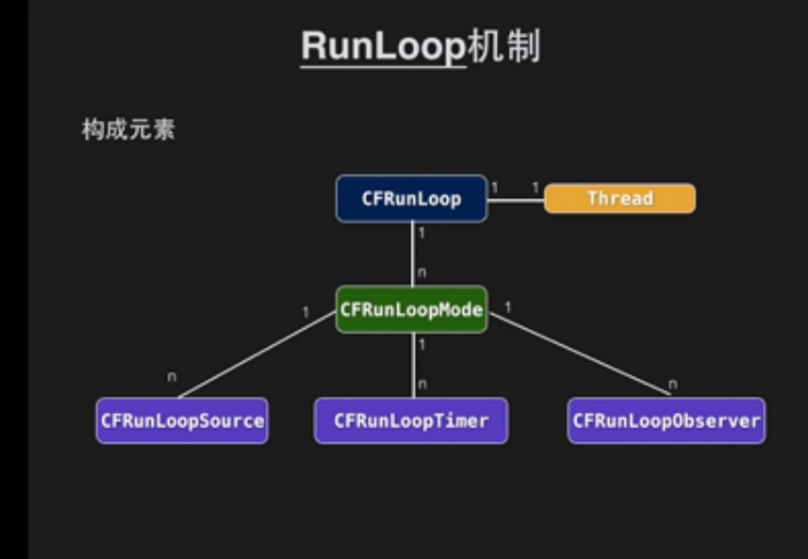
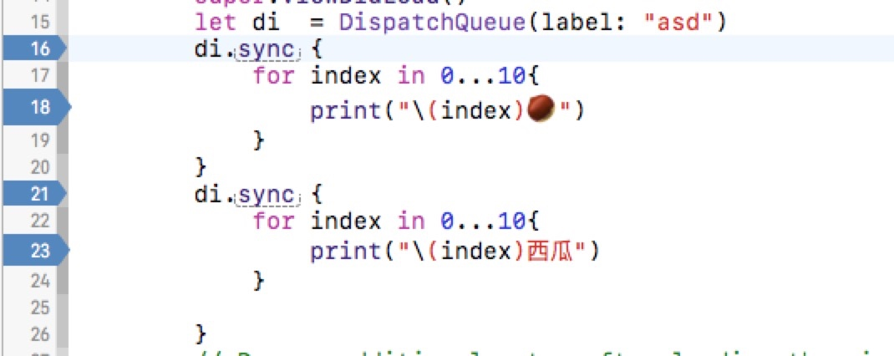

从学习RunLoop到研究线程

sunnyxx的视频,说的应该是比较明白了,但是我还是有点理解不上去,主要还是没有这种设计的思维
主队列同步执行为什么会死锁
互相等待对方完成，举个简单例子好了。当打印了1以后，主线程调用dispatch_sync这个函数，当这个函数返回的时候主线程才能往下执行。但dispatch_sync返回的条件是里面的Block返回，里面的Block是不会执行的，因为它是被插到主队列最后执行，然而因为dispatch_sync无法返回，所以主队列无法执行到最后一个任务。
NSLog(@"1");
dispatch_sync(dispatch_get_main_queue(), ^{
NSLog(@"2");
});
NSLog(@"3");
主线程中 执行代码本身就是一个任务.在添加NSLog2任务的时候 任务2加再任务一之后,但是因为必须同步执行,所以任务2要执行完毕 才可执行任务1,任务1又必须执行完毕才可以执行任务2
串行队列中同步和异步的区别
简单的说同步和异步的区别就是是否会阻塞线程

上面的代码中,通过断点可以看出,在同步执行的时候,第一个for循环不执行完毕,21行的断点是不会走的,说明线程是阻塞状态.当第一个for循环执行完毕之后,才会到第21行的断点,然后在执行第二个for循环.
如果把sync 改为async 异步的时候将四个断点按顺序牌号,执行的顺序是1324,无论要执行的代码是什么,都不会影响线程的阻塞.
所以这就可以解释为什么不能再主线程中同步执行代码,主线程中,执行整个代码是一项任务,如果在添加同步任务的话,同步任务必须要执行完毕才可以向下执行,但是整个代码又必须执行完毕才可以执行同步任务(因为在串行队列中,同步任务在整个任务之后).
但是不在主线程中就不会出现这种情况,因为子线程中没有要执行整个代码的任务.所以它可以随时阻塞下来,等任务一个任务执行完毕在执行其他的任务.
总结,主线程中不能执行同步任务的主要原因就是主线程是运行程序的线程,它阻塞了,程序就停了...